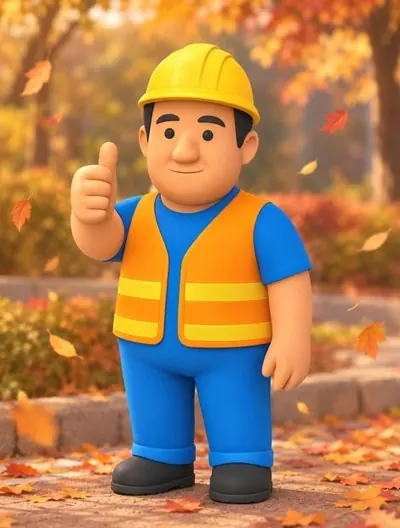

보일러 세관 한길, 40년 이상의 노하우
중앙설비산업은 울산을 중심으로 영남 지역 공장과 산업단지의 산업용 보일러를 세관하고 수리하는 업체입니다.
인사말
예시 문안입니다. 대표님 말씀으로 바꿔 주세요.
중앙설비산업을 찾아 주셔서 감사합니다.
조선소에서 근무할 때는 선박 보일러 안전밸브의 시트와 디스크를 래핑하는 것이 제 일이었습니다. 그 손기술에 40년 이상 쌓은 세관 노하우를 더해 산업용 보일러와 열교환기, 소각로를 정비하고 있습니다.
보일러는 공장이 멈추지 않게 하는 설비이고, 동시에 압력을 다루는 위험한 설비입니다. 그래서 정해진 순서를 지키고, 안전을 먼저 챙기며, 소모품은 고쳐 쓰기보다 바꾸시라고 말씀드립니다.
중앙설비산업 대표 자료를 받으면 채울 자리
- 40년 이상의 노하우보일러 세관 한길을 걸어온 경험
- 조선소·선박 보일러 경험선박 보일러 안전밸브 정비를 직접 해 온 경력
- 법정검사 대행검사대상기기·압력용기 계속사용안전검사
- 영남 지역 출장울산을 중심으로 부산·경남·경북 현장
현장에서 지키는 것
소다 보일링과 안전밸브 정비 글에 적은 원칙을 옮겼습니다.
안전이 먼저입니다
강알칼리 약품을 다루는 작업은 안전교육을 하고 안전장구와 안전복장을 반드시 갖춥니다.
예민한 부품은 미리 보호합니다
약품을 넣기 전에 연락관 밸브를 잠가 안전밸브, 수주통, 수위 조절기에 약품이 닿지 않게 합니다.
확인한 뒤에 넣습니다
약품을 넣기 전에 온수로 순환 테스트를 해 이상이 없는지 먼저 봅니다.
폐액은 정해진 방법으로
쓰고 난 약품은 폐수 수거 차량으로 반출합니다.
업체 정보

- 상호
- 중앙설비산업
- 대표
- 자료를 받으면 채울 자리
- 사업 분야
- 산업용 보일러·열교환기·소각로 세관과 수리, 튜브 교체·축로, 계속사용안전검사 대행
- 사무실
- 052-260-0277
- 홈페이지
- 보일러세관.com
- 출장 지역
- 울산, 부산, 경남, 경북, 김해, 경주, 양산, 창원, 포항
- 주소
- 자료를 받으면 채울 자리
- 사업자등록번호
- 자료를 받으면 채울 자리
- 면허·등록
- 자료를 받으면 채울 자리
- 블로그
- 중앙설비산업 블로그
찾아오시는 길
지도 자리자료를 받으면 채울 자리정확한 주소를 받으면 지도와 네이버·카카오 지도 링크를 넣습니다. 출장 지역: 울산, 부산, 경남, 경북, 김해, 경주, 양산, 창원, 포항

보일러 세관과 법정검사, 언제든지 연락 주세요
설비 종류와 용량, 원하는 일정을 알려 주시면 작업 범위와 방법을 함께 정하겠습니다.